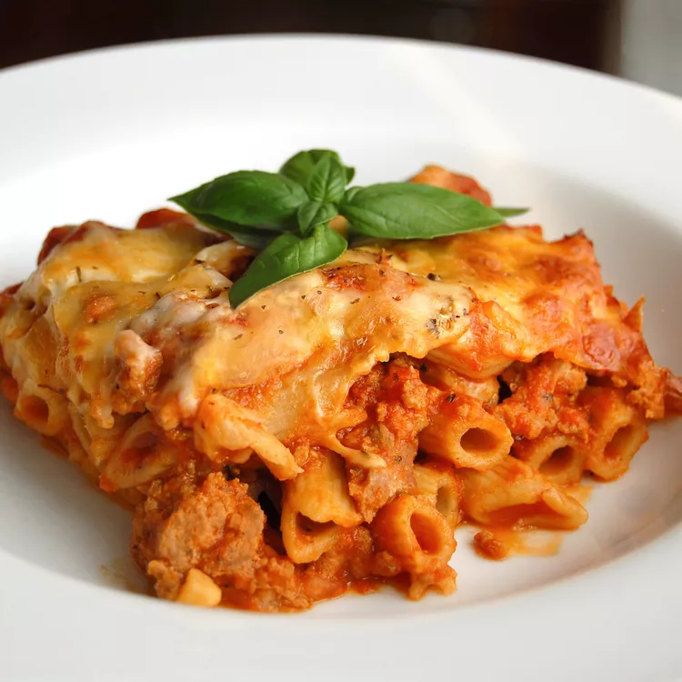

Baked Ziti

Description
This is a simple baked ziti recipe. There is a 15 minute prep time and a 45 minute cook time.
it will give about 10 servings.
Ingredients
- 1 lb dry ziti pasta
- 1 onion, chopped
- 1 lb lean ground beef
- 2 (26oz) jars spaghetti sauce
- 6 oz provolone cheese, sliced
- 1.5 cups sour cream
- 6 oz mozzarella cheese, shredded
- 2 tbps grated Parmesan cheese
Steps
- Bring a large pot of lightly salted water to a boil.
Add ziti pasta, and cook until al dente, about 8 minutes; drain.
- Meanwhile, brown ground beef and onion in a large skillet over medium heat;
stir in spaghetti sauce and simmer for 15 minutes.
- Preheat the oven to 350 degrees F (175 degrees C).
Butter a 9x13-inch baking dish.
- Spread 1/2 of the ziti in the bottom of the prepared dish;
top with Provolone cheese, sour cream, 1/2 of the meat sauce, remaining ziti, mozzarella cheese, and remaining meat sauce.
Top with grated Parmesan cheese.
- Bake in the preheated oven until heated through and cheeses have melted, about 30 minutes.
Back to main page